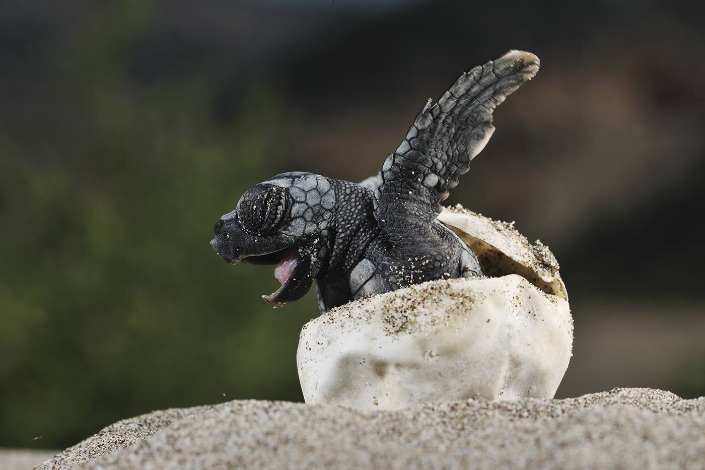

Sea Turtles
Six of the seven sea turtle species are classified as highly threatened or endangered due to human actions and lifestyles. Past 200 years, human activities have tipped the scales against the survival of these ancient mariners.
Slaughtered for their eggs, meat, skin, and shells, sea turtles suffer from poaching and over-exploitation. They also face habitat destruction and accidental capture known as bycatch in fishing.

Along with the drastic changes in climate, turtle nesting sites are heavily impacted as it alters sand temperatures; affecting the sex of the turtles.
Places found: Mesoamerican Reef, Coastal East Africa, Coral Triangle, The Galápagos, Gulf of California
Whales
Whales roam throughout all of the world's oceans, communicating with complex and mysterious sounds.
Their sheer size amazes us: the blue whale can reach lengths of more than 100 feet and weigh up to 200 tons—as much as 33 elephants.

Despite living in the water, whales breathe air. And like humans, they are warm-blooded mammals who nurse their young. A thick layer of fat called blubber insulates them from cold ocean waters.
Places found: Southern Chile, Arctic, The Galápagos, Coral Triangle, Gulf of California, Coastal East Africa
Great White Shark
The great white shark is the world's largest known predatory fish. It has 300 teeth, yet does not chew its food. Sharks rip their prey into mouth-sized pieces which are swallowed whole.

The shark’s heavy, torpedo-shaped body allows it to cruise efficiently for long periods of time, and then suddenly switch to high speed bursts in pursuit of prey—sometimes leaping out of the water.
It feeds on a broad spectrum of prey, from small fish, such as halibut, to large seals and dolphins.